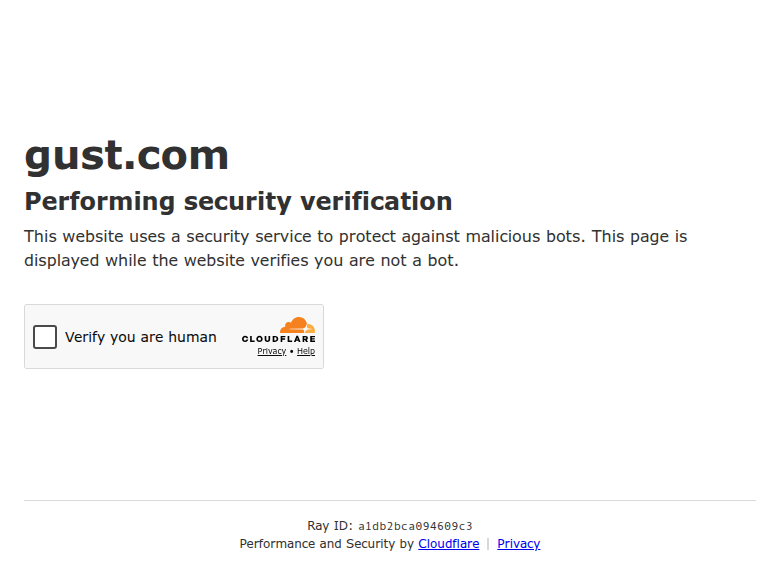

Profile
- Company
- Gust
- Url
- https://gust.com/
- Source Category
- Capital & discovery marketplaces
- Research Status
- Deep Cited Research / Draft Complete
- Current Status
- live - active SaaS platform for founding, operating, and fundraising; active about/pricing/navigation pages.
- Founded Launch Year
- 2004; relaunched/rebranded from AngelSoft to Gust in 2011
- Company Age
- 22 years from 2004; 15 years as Gust brand
- Hq Country
- United States
- Operating Area
- global; 192 countries cited
- Target Users
- startup founders, scalable/high-growth companies, angel groups, accelerators, early-stage investors
- Product Category
- startup formation/CaaS, founder operations, investor deal-flow and relationship management, fundraising platform
Product Flows
- Swipe Card Interface
- no
- Mutual Match
- no
- Ai Matching Scoring
- not found
- Ai Deck Scoring
- not found
- Founder To Founder Flow
- no
- Founder To Investor Flow
- yes - startup applications/screening/deal flow
- Project Profiles
- yes - startup applications/profiles
- Messaging Collaboration
- yes - ratings/comments/events/collaboration
- Mobile App
- not found
- Web App
- yes
Security & Documents
- Nda Gated Unlock
- not found
- Data Room
- yes - secure deal data rooms for investors
- E Signature
- yes - Gust Launch/startup incorporation workflows include legal/back-office documentation; exact e-sign workflow not fully public
- Meeting Prep Ai Briefing
- not found
Pricing, Funding & Traction
- Pricing Model
- Gust Launch Start yearly subscription shown at $300; Mission Control $99/month
- Business Model
- SaaS/CaaS subscriptions for founders plus investor group platform/deal-flow tools
- Total Funding
- not found
- Funding Rounds
- not found
- Investors
- not found
- Funding Source Type
- privately held; external funding not found
- Last Funding Date
- not found
- Users Traction
- 850,000+ startups, 85,000+ investment professionals; official platform for angel federations and accelerators
- Deals Funding Facilitated
- Startups raised more than $100M on Gust in 2022
- Partnerships
- official platform of leading angel investor federations and venture accelerators; TechCrunch 2011 noted 50+ endorsing organizations
- Media Coverage
- TechCrunch covered AngelSoft-to-Gust relaunch
- Product Update Activity
- Live website/help/blog; core about page current.
- Acquisition Rebrand History
- AngelSoft rebranded/relaunched as Gust.com in 2011
Scores
- Product Overlap Score
- 4
- Feature Maturity Score
- 3
- Market Traction Score
- 3
- Funding Strength Score
- 3
- Ai Depth Score
- 3
- Nda Security Strength Score
- 4
- Network Moat Score
- 3
- Direct Threat Score
- 3.4
- Source Confidence
- High for product/traction; Medium for funding due to unavailable public funding data
Evidence Notes
- Primary Sources
- https://gust.com/about/
https://gust.com/companies/gustcom
https://gust.com/companies/subscriptions/registrations/new?plan_group=launch5_1
https://gust.com/mission-control/
https://gust.com/blog/the-world-of-gust/
https://gust.helpscoutdocs.com/article/211-publishing-your-profile - Secondary Sources
- https://techcrunch.com/2011/09/13/angelsoft-relaunches-as-gust-com-now-connects-startups-to-investors/
- Unsupported Claims
- Company funding/investors not verified.
- Contradictions
- First-pass row claimed 800,000 founders; current about page says 850,000+ startups.
- Last Checked
- 2026-07-19
- Notes
- Gust own public company profile verifies January 2004 founding.
Registration Flow
Research date: 2026-07-19. Screenshots are sanitized and omit any credentials or tokens.
Outcome: no account created. The registration attempt reached a Cloudflare challenge that automation could not complete.
Stop point: Cloudflare challenge before a founder account form could be completed.
- Opened Gust's public site and registration-oriented entry points.
- Attempted to continue into account creation for founder/fundraising use.
- Stopped at the Cloudflare challenge rather than attempting to bypass it.
